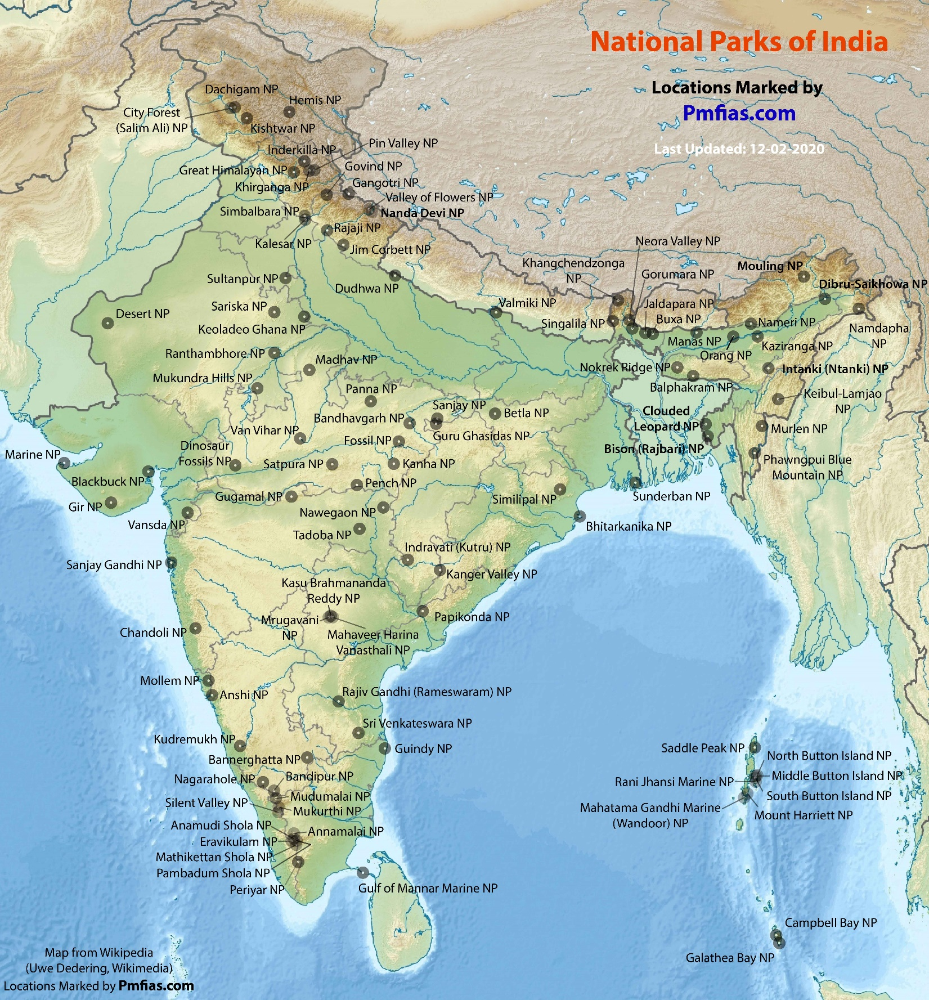

-:National park:-
National parks in India are IUCN category II protected areas. India's first national park was established in 1936 as Hailey National Park , now known as Jim Corbett National Park, Uttarakhand. By 1970, India only had five national parks. In 1972, India enacted the Wildlife Protection Act and Project Tiger in 1973 to safeguard the habitats of conservation reliant species.
Further federal legislation strengthening protection for wildlife was introduced in the 1980s.
There are 106 existing national parks in India covering an area of 43,716 km2, which is 1.33% of the geographical area of the country (National Wildlife Database, Dec. 2020). In addition to the above, 75 other National Parks covering an area of 16,608 km2 are proposed in the Protected Area Network Report (Rodgers & Panwar, 1988). The network of parks will go up 176 after full implementation of the above report.
| State | Name | Notable Feature | Fauna | Rivers and Lakes |
|---|---|---|---|---|
| Kerala | Anamudi Shola National Park | The park is administered by Munnar Wildlife Division, together with the nearby Mathikettan Shola National Park, Eravikulam National Park, Pampadum Shola National Park, Chinnar Wildlife Sanctuary and the Kurinjimala Sanctuary, with Anamudi Shola providing connectivity between all these protected areas. | Elephant, Tiger, Nilgiri tahr, Gaur, Spotted Deer, Sambar, Grizzled Giant Squirrel, Hanuman Langur, Sloth Bear, Flying Squirrels | Pambar River |
| Karnataka | Anshi National Park | Part of Kali Tiger Reserve | Great hornbill, tiger, leopard, black panther, bear, elephant. | Kali River (Karnataka) |
| Meghalaya | Balphakram National Park | Balphakram means 'land of the eternal wind' according to the myth of the Garos. | Wild water buffalo, red panda, elephant and eight cat species, including the tiger and marbled cat | |
| Madhya Pradesh | Bandhavgarh National Park | Very high tiger density, so the saying : "In any other Park, you are lucky if you see a tiger. In Bandhavgarh, you are unlucky if you don't see (at least) one." Gaurs reintroduced from Kanha National Park | Bengal tiger, striped hyena, caracal, gaur, sambar deer, nilgai, barking deer, chital, | |
| Karnataka | Bandipur National Park | Dry deciduous forest is dominant. Also include moist deciduous forests and shrublands. Together with the adjoining Nagarhole National Park , Mudumalai National Park and Wayanad Wildlife Sanctuary, it is part of the Nilgiri Biosphere Reserve Invasive Alien Species - Lantana bush, Parthenium | Chital, Bengal tiger, gray langurs, Indian giant squirrel, gaur, leopard, sambar deer, Indian elephants, honey buzzard, red-headed vulture | Kabini River, Moyar River |
| Jharkhand | Betla National Park | Tiger, Indian bison, elephant, hyenas, monkey, leopard | North Koyal River | |
| Odisha | Bhitarkanika National Park | A ramsar site | Mangroves, saltwater crocodile, white crocodile, Indian python, black ibis, wild pigs, rhesus monkeys, olive ridley sea turtle, chital | Brahmani River, Baitarani River, Dhamra River, Pathsala |
| Gujarat | Blackbuck National Park, Velavadar | Used to be a cheetah hunting ground Has largest population of lesser florican A grassland ecosystem Successful conservation programs for the blackbuck, wolf and lesser florican (a bustard) are ongoing | Blackbucks, the endangered Indian grey wolf, the nocturnal striped hyena, Indian fox, golden jackal, jungle cat and many small mammals like hare, gerbil, field mice, mongoose and hedgehog. | |
| West Bengal | Buxa Tiger Reserve | Northern boundary along international border with Bhutan and eastern boundary touches Assam The fragile "Terai Eco-System" constitutes a part of this reserve The Phibsoo Wildlife Sanctuary of Bhutan is contiguous to the north of Buxa, Manas National Park lies on east of Buxa Buxa, serves as an international corridor for Asian elephant migration between India and Bhutan Rajabhatkhawa Vulture Breeding Centre was established by Bombay Natural History Society to emulate the success of Jatayu Conservation Breeding Centre, Pinjore | dian leopard, Bengal tiger, clouded leopard, giant squirrel, gaur, chital and wild boar Eurasian griffon, Amur falcon Endangered species include leopard cat, Bengal florican, regal python, Chinese pangolin, hispid hare, hog deer lesser adjutant, white-rumped vulture, slender-billed vulture, chestnut-breasted partridge, rufous necked hornbill, ferruginous pochard and great hornbill | |
| Kerala | Eravikulam National Park | Declared a Sanctuary in 1975 with the intention of protecting the indigenous population of Nilgiri Tahr The land of �Neelakurinji�, the flower that blooms once in twelve years Anamudi, the highest peak of western ghats, is located here Vegetation - Rolling grasslands, with shola forests in upper parts | Nilgiri tahr, Neelakurinji lion-tailed macaques, gaur, Indian muntjac and sambar deer | Pambar River (Kerala) |
| Sikkim | Khangchendzonga National Park | UNESCO World Heritage Site. Houses the third highest peak on the planet, Mt. Kangchenjunga. The Zemu glacier, one of the largest in Asia, is located within the park. | musk deer, snow leopard, Himalayan tahr, dhole, sloth bear, viverrids, Himalayan black bear, red panda, Tibetan wild ass, Himalayan blue sheep, serow, goral and takin | Teesta (to the east) |
| Assam | Manas National Park | UNESCO World Heritage Site, contiguous with Royal Manas National Park, Bhutan. 2 types of biomes - grasslands biome and forest biome. Rhinos were reintroduced in 2008 under Indian Rhino Vision from Pobitora Wildlife Sanctuary and Kaziranga National Park | Assam roofed turtle, hispid hare, golden langur and pygmy hog | Manas |
| Gujarat | Marine National Park, Gulf of Kutch | Threat - Coral bleaching | Corals, sponges, jellyfish, endangered sea turtles such as green sea turtles, olive ridleys and leatherbacks, dugongs, Indo-Pacific humpback dolphins, blue whales |
